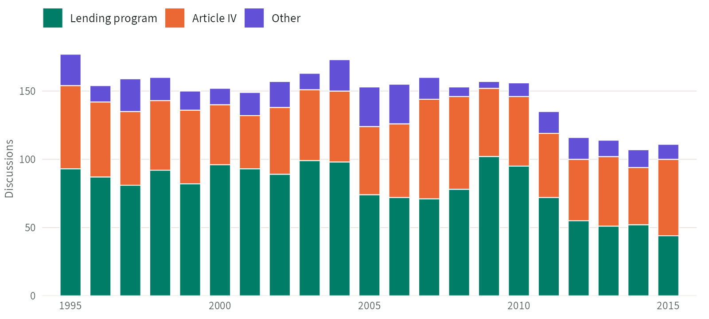

Governance
The IMF Executive Board Minutes Dataset is a text corpus of the IMF Executive Board’s discussions of individual countries in 1995–2015. It covers 3,111 meetings on 142 low- and middle-income countries, mostly on lending and economic surveillance, with more than 38 million words of comments from Board members. For each meeting, it identifies everyone who attended and gives the full text of each comment from the Board’s minutes, with the speaker’s position, country, and constituency, and whether the comment was a written statement. The codebook explains how the Executive Board works and defines each variable.
At a glance
- Coverage
- 1995–2015; 142 countries
- Version
- January 2025
- Unit of observation
- Meeting (meeting-level data) and speech (speech-level data)
- Status
- Available
Downloads
- Codebook (IMFMonitor_ExecutiveBoardMinutes_Codebook.pdf)Download
PDF · 285 KB · January 2025 - Text corpus (IMFMonitor_ExecutiveBoardMinutes.zip)Download
The speech-level data, as IMFMonitor_ExecutiveBoardMinutes.rds (the codebook’s IMFEBM_Speeches_Nov2024_V1.rds): one row per speech, or per attendee who did not speak, with the full text, the speaker’s name, position, country, and constituency, and the meeting’s identifier and date.
R data (.rds) in ZIP · 93.6 MB · January 2025 - Meeting-level data (IMFMonitor_ExecutiveBoardMeetings.rds)Download
The codebook’s IMFEBM_Meeting_Nov2024_V1.rds: one row per meeting, with its date, minutes number, topic, and the country under discussion, with its constituency and whether it is an emerging, low-income, or small economy. It also lists the meetings held in restricted session or without discussion, which have no text. Links to the speech-level data through meeting_id.
R data (.rds) · 92 KB · January 2025
How to cite
Forster, T., Honig, D. & Kentikelenis, A. (2025). Formal governance matters: when, how, and why states act on the IMF Executive Board. Review of International Political Economy. https://dx.doi.org/10.1080/09692290.2024.2441136
Figures

Publications using the data
The codebook asks users to cite Forster, Honig, and Kentikelenis (2025).
- Forster, T., Honig, D., & Kentikelenis, A. (2025). Formal governance matters: When, how, and why states act on the IMF Executive Board. Review of International Political Economy, 32(3), 818–846. https://doi.org/10.1080/09692290.2024.2441136
Version history
January 2025
The codebook and the meeting- and speech-level data were published on Harvard Dataverse in January 2025, with the replication data for Forster, Honig, and Kentikelenis (2025). imfmonitor.org offered the codebook and speech-level data from May 2025.
Current release: its files are under Downloads.